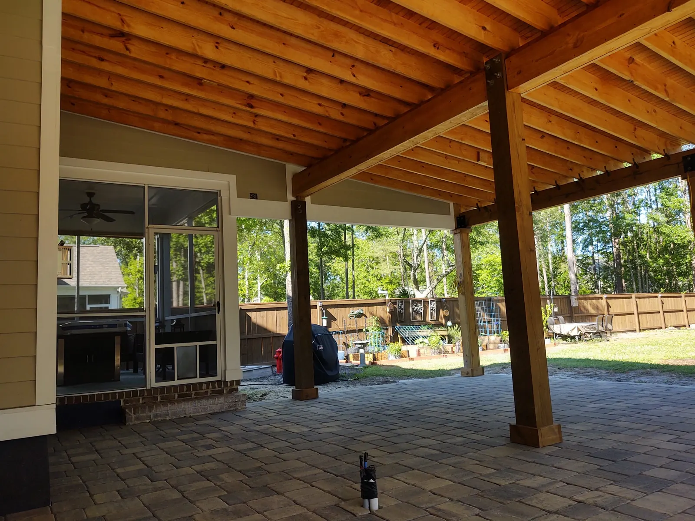

Does an Outdoor Living Space Add Value to Your Home?

Why We Will Not Quote You a Percentage
Every article on this subject quotes a return-on-investment percentage. We are not appraisers and we are not going to invent one. What we can tell you is what we have seen happen when one of our projects went on the market.
The Clearest Evidence We Have
We built a covered porch and an outdoor kitchen for a client. That house later sold, and we talked to the people who bought it.
They told us the porch and kitchen were the reason they bought the house. Every other house they looked at in that neighborhood had nothing for backyard living — a slab, a lawn, and whatever the builder put in. Theirs was the one where the backyard was already finished.
That is a single sale, not a statistic. But it points at the thing that actually moves value in a Charleston neighborhood full of similar houses: being the one that is different in the way buyers care about.
Why It Works Hardest on New Construction
In a neighborhood where the houses were built by the same builder in the same few years, the interiors are close to identical. The finishes vary a little, the floor plans repeat, and buyers walk through four of them in an afternoon.
The backyards are where they differ, and most of them do not differ at all — because the builder package is the cheapest planting and the smallest slab that satisfies the contract.
A finished outdoor space is the one thing in that comparison the other houses cannot match by having a nicer kitchen island.
What We Would Build If Resale Mattered Most
If the goal is a house that shows well rather than a yard built purely for you, the order we would spend in is:
- Cover first. A pergola or pavilion reads as square footage you can use. A pergola is $10,000 to $30,000; a pavilion $30,000 to $90,000+.
- A patio sized for real furniture. From $18 per sq ft, and undersized patios are the most common mistake we are called in to correct.
- Lighting. About $200 a light plus a transformer, and it is what makes a yard photograph well for a listing.
- Planting with structure. Layered beds that suit the house read as care taken; beds $1,000 to $2,000, a front yard $5,000 to $10,000.
What we would not do for resale alone is the most personal end of the spectrum — a putting green, a very specific pool layout, an outdoor space built around one hobby. Build those because you want them, not because you expect the next owner to pay for them.
The Honest Caveats
- Quality shows and so does the opposite. A settling patio or a structure built without proper footings is a deduction on an inspection report, not an asset.
- It has to suit the house. A yard that fights the architecture reads as something a buyer will have to undo.
- Maintenance burden counts against you. Buyers notice a yard that is obviously going to be a weekend job every weekend, which is part of why we design not to over plant.
If you are weighing this up, our design guide covers the order the decisions get made, and what an outdoor living space costs has the numbers.
The Closest Thing to Published Data
The annual Cost vs. Value report is the most widely cited independent source. Its 2025 national figures put a wood deck addition at an average cost of $18,263 with 94.9 percent recouped at resale, and a composite deck at $25,096 with 88.5 percent.1
Two honest limits. It covers decks, not patios, pavilions or outdoor kitchens, and it is a national average rather than a Charleston one. It is not a promise about any particular house. But it is independent, and it points the same way as the buyers in the story above.
Sources
- Zonda, 2025 Cost vs. Value Report. Source
Frequently Asked Questions
Does an outdoor living space add value to a home in Charleston?
We are not appraisers, so we will not quote a percentage. What we can tell you is that buyers of a house we built a porch and outdoor kitchen for told us it was the reason they bought it, because every other house in that neighborhood had nothing for backyard living.
Which outdoor projects help most at resale?
Cover first, a patio sized for real furniture, lighting, and planting with structure. Highly personal features like a putting green are worth building for yourself, not for the next owner.
Does it matter more on a new construction home?
Usually yes. In a neighborhood of similar houses the interiors are close to identical, so the backyard is where they differ, and most builder packages leave nothing there.
Can an outdoor project hurt value?
It can if it is built badly or does not suit the house. Settling hardscape and structures without proper footings show up on an inspection, and a yard that will clearly be high maintenance counts against you.
See It Built
Projects where we put this into practice.


Planning a Project of Your Own?
See everything we design and build, or get in touch to talk through your ideas with Doug and Zach.